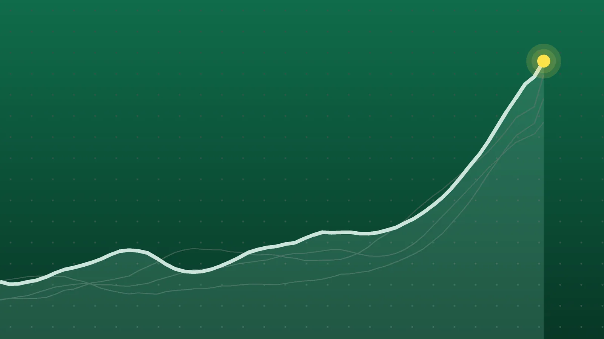

SportsExplainer
NHL Scores, Oct. 22: McDavid and Draisaitl Get 5 Points Each
Twelve games, three that needed extra time, two shutouts and a 6-foot-9 goalie’s debut. Here’s every Thursday result and what it did to the early-season picture.

Quick take
- Connor McDavid and Leon Draisaitl each had two goals and three assists in Edmonton’s 6-5 shootout win over Carolina; McDavid has 31 points in 10 games.
- Troy Stecher scored with 28 seconds left as Toronto beat the Rangers 5-4, and Sergei Bobrovsky tied Henrik Lundqvist for sixth in career wins with 459.
- Pittsburgh’s Arturs Silovs and Boston’s Michael DiPietro posted shutouts, and Florida’s Cooper Black made 17 saves in his NHL debut.
- Vancouver lost 5-2 to Detroit for its ninth straight loss, and Dallas won a fourth in a row with an overtime goal from Roope Hintz.
Why it's trending The NHL played 12 games on Thursday, Oct. 22, including Edmonton’s 6-5 shootout win over the defending champion Carolina Hurricanes.
NHL scores for Oct. 22
Edmonton’s two stars put on the show of the night. Connor McDavid and Leon Draisaitl each finished with two goals and three assists, McDavid tied the game with 1:36 left in regulation, and the Oilers beat the defending Stanley Cup champion Carolina Hurricanes 6-5 in a shootout, NHL.com reported.
In Toronto, defenseman Troy Stecher broke a 4-4 tie with 28 seconds to go, and the Maple Leafs beat the Rangers 5-4 for a third straight win. The victory was No. 459 of Sergei Bobrovsky’s career, which ties Henrik Lundqvist for sixth on the NHL’s all-time list, according to NHL.com.
All final scores
| Winner | Score | Loser | Note |
|---|---|---|---|
| Toronto Maple Leafs | 5-4 | N.Y. Rangers | Stecher winner with 28 seconds left; Adam Fox had 4 assists for New York |
| Edmonton Oilers | 6-5 (SO) | Carolina Hurricanes | McDavid and Draisaitl 2 goals, 3 assists each; Nugent-Hopkins scored the only shootout goal |
| Pittsburgh Penguins | 4-0 | Florida Panthers | Arturs Silovs 26 saves; Robertson scored twice, once into an empty net |
| San Jose Sharks | 6-2 | at Ottawa Senators | Yaroslav Askarov 41 saves; two short-handed goals |
| Dallas Stars | 3-2 (OT) | Winnipeg Jets | Roope Hintz tied it late and won it 3:47 into overtime |
| Boston Bruins | 6-0 | Nashville Predators | Michael DiPietro’s first NHL shutout; David Pastrnak 2 goals, 2 assists |
| Calgary Flames | 2-1 | Minnesota Wild | Goalie Cooley made 36 saves; Kirill Kaprizov’s point streak ended at seven |
| New Jersey Devils | 4-1 | Anaheim Ducks | Arseny Gritsyuk scored for a fourth straight game |
| Los Angeles Kings | 3-2 (OT) | at N.Y. Islanders | Brandt Clarke won it at 2:43 of OT; Darcy Kuemper 41 saves |
| Seattle Kraken | 5-3 | Utah Mammoth | Samoskevich broke a 3-3 tie with 5:25 left |
| St. Louis Blues | 6-2 | Vegas Golden Knights | Justin Barron’s first four-point game; Holloway 2 goals |
| Detroit Red Wings | 5-2 | at Vancouver Canucks | Lucas Raymond 2 goals; Canucks’ ninth straight loss |
Home teams are the winners unless “at” marks the loser’s rink. Scores are confirmed by Hockey-Reference, The Canadian Press and each game’s NHL.com recap. No game was postponed.
Oilers 6, Hurricanes 5 (SO): a comeback in the final minutes
Carolina led 4-2 after two periods and went back in front 5-4 on Valimaki’s goal with 2:40 left. Edmonton thought it had tied the game moments later, but a Zach Hyman goal was waved off for a high stick. Eight seconds after that, McDavid’s shot went in off a Carolina skate to force overtime, NHL.com reported. Ryan Nugent-Hopkins, playing his first game of the season, scored the only goal of the shootout.
The numbers behind McDavid’s start are rare. He has 31 points in a season-opening 10-game point streak, and AP noted that only Mario Lemieux, Mike Bossy and Wayne Gretzky had reached 30 points in 10 games or fewer. Draisaitl has scored in five straight games, seven goals in all. Edmonton defenseman Mattias Ekholm was helped off in the third period after hitting his head on the ice; the team expects him back in a couple of weeks.
Maple Leafs 5, Rangers 4: three leads, one winner
The Rangers erased three Toronto leads, the last on Alexis Lafreniere’s goal in the third period. With a penalty coming against New York, Rielly found Stecher, whose shot from the right circle beat goalie Dylan Garand. It was Stecher’s first goal in 12 games this season, and NHL.com said it was Toronto’s latest go-ahead goal since Nov. 13, 2021. Toronto’s fourth line produced seven points. On the other side, Fox’s four assists were the third such game of his career, according to NHL.com, and Blueshirt Banter noted that Toronto outshot New York 35-25.
Penguins 4, Panthers 0: a giant debut in a loss
Pittsburgh snapped a four-game losing streak behind Silovs, who made 26 saves for his second shutout of the season, NHL.com reported. Evgeni Malkin and Lapierre also scored. Florida’s Cooper Black, at 6-foot-9 the tallest goalie in NHL history, made 17 saves in his first NHL game. Florida has now been outscored 9-1 in two nights and was shut out for the first time this season, the Panthers’ own recap said.
What it means
- Edmonton and Boston on top of the night: the Oilers are 8-1-1 (17 points) and the Bruins 8-2-1 (17 points). Boston hasn’t lost in regulation in seven games, going 6-0-1.
- Carolina still strong: even with the loss, the Hurricanes are 8-2-2 (18 points in 12 games).
- Vancouver’s slide: the Canucks are 2-9-1 and 0-8-1 during their nine-game skid, so they have five points from 12 games. Detroit has a six-game point streak.
- Winning streaks: Dallas has won four straight and Toronto three. Winnipeg has lost four in a row, and Anaheim five.
- Kings recovering: Los Angeles lost its first six games but has won two straight to reach 2-4-2.
- Ottawa’s goalie problem: the Senators placed Linus Ullmark on injured reserve with a lower-body strain, NHL.com reported, a day after he left Wednesday’s game. Ottawa (7-4-0) has lost two of three.
What’s next
- Friday, Oct. 23: Montreal at Chicago, 8 p.m. ET, and Tampa Bay at Colorado, 9 p.m. ET, according to The Canadian Press.
- Saturday, Oct. 24: the Rangers visit Ottawa at 7 p.m. ET. Carolina finishes its road trip at St. Louis, and Toronto plays at Edmonton.
- For Wednesday’s results, including Brady Tkachuk’s return to Ottawa, see our Oct. 21 roundup.
Sources
- Hockey-Reference.com NHL Scores (Oct. 22, 2026 box scores)Oct. 22, 2026
- The Canadian Press via paNOW Scores and schedule for Thursday, Oct. 22, 2026Oct. 22, 2026
- NHL.com McDavid, Draisaitl each has five points, Oilers defeat Hurricanes in shootoutOct. 23, 2026
- Associated Press via WRAL McDavid scores twice and has 3 assists in the Oilers' 6-5 shootout victory over the HurricanesOct. 23, 2026
- NHL.com Stecher scores in final minute, Maple Leafs edge Rangers for third win in rowOct. 23, 2026
- Blueshirt Banter Rangers Recap: Late Stecher Goal Sinks Rangers in Toronto, 5-4Oct. 22, 2026
- NHL.com Silovs stops 26, Penguins shut out Panthers to end four-game skidOct. 23, 2026
- Florida Panthers RECAP: Panthers can't find their scoring touch in loss to PenguinsOct. 23, 2026
- NHL.com Sharks score six, ease past Senators for first regulation winOct. 23, 2026
- BVM Sports Sens Fall to Sharks 6-2 After Three-Goal Second-Period CollapseOct. 22, 2026
- NHL.com Hintz ties it late, lifts Stars past Jets in OT for fourth straight winOct. 23, 2026
- NHL.com DiPietro gets first career shutout, Bruins defeat Predators to stay hotOct. 23, 2026
- NHL.com Cooley makes 36 saves, Flames hang on to edge WildOct. 23, 2026
- NHL.com Gritsyuk scores again, Devils push past slumping DucksOct. 23, 2026
- NHL.com Clarke scores in OT, Kings recover to defeat IslandersOct. 23, 2026
- NHL.com Samoskevich breaks tie in third, Kraken recover again to get past MammothOct. 23, 2026
- NHL.com Barron gets first career four-point game in Blues win against Golden KnightsOct. 23, 2026
- NHL.com Raymond scores twice, Red Wings hand Canucks ninth straight lossOct. 23, 2026
Keep reading

Sports Scores, Oct. 21: Other Results From NHL, Tennis and More
Other sports results for Oct. 21, 2026: the NHL’s two games, 24 WTA and ATP singles matches, plus MLS, FBS college football and an Afghanistan ODI win.

Sports Scores, Oct. 23: Brewers Win World Series Game 1, 3-2
Sports scores for Oct. 23, 2026: Brewers 3, Rays 2 in World Series Game 1, plus two NHL games, five European soccer leagues, cricket and 20 tennis results.
NHL Scores, Oct. 24: Nylander Hits 300 as Leafs Rout Oilers 7-2
NHL scores for Oct. 24, 2026: all 12 finals, including Toronto’s 7-2 win in Edmonton, Utah’s overtime comeback on Tampa Bay and Carolina’s 4-0 shutout.